# A tibble: 6 × 6
pid time_point arm nugent_score crp_blood ph
<chr> <chr> <chr> <dbl> <dbl> <dbl>
1 pid_01 baseline placebo 8 0.44 5.7
2 pid_01 week_1 placebo 7 1.66 5.2
3 pid_01 week_7 placebo 7 1.44 5.4
4 pid_02 baseline placebo 7 1.55 5.2
5 pid_02 week_1 placebo 7 0.75 4.8
6 pid_02 week_7 placebo 4 1.17 4.2Intro to data wrangling and visualization with the tidyverse
Workshop 1, Module 3
Goals for this module
By the end of this module you can:
- look at a table and say what one row represents
- pick rows with
filter()and columns withselect() - derive new columns with
mutate() - sort rows with
arrange() - count categories with
count() - recognise verbs that keep what a row represents the same vs verbs that change it
- read and write a basic ggplot: data, mapping, geom
Discussions: discord
Ask questions in the #workshop-questions channel.
Join the Discord server: https://discord.gg/zSBTQ9ctt

The pipe |>
|> is pronounced “and then”.
table_02 |> head() reads as “take table_02, and then call head() on it.”
R 4.1 added |> to base R. We use it everywhere in this module.
The pipe in action
The pipe in action
# A tibble: 6 × 6
pid time_point arm nugent_score crp_blood ph
<chr> <chr> <chr> <dbl> <dbl> <dbl>
1 pid_01 baseline placebo 8 0.44 5.7
2 pid_01 week_1 placebo 7 1.66 5.2
3 pid_01 week_7 placebo 7 1.44 5.4
4 pid_02 baseline placebo 7 1.55 5.2
5 pid_02 week_1 placebo 7 0.75 4.8
6 pid_02 week_7 placebo 4 1.17 4.2The pipe in action
What does a row represent?
# A tibble: 132 × 6
pid time_point arm nugent_score crp_blood ph
<chr> <chr> <chr> <dbl> <dbl> <dbl>
1 pid_01 baseline placebo 8 0.44 5.7
2 pid_01 week_1 placebo 7 1.66 5.2
3 pid_01 week_7 placebo 7 1.44 5.4
4 pid_02 baseline placebo 7 1.55 5.2
5 pid_02 week_1 placebo 7 0.75 4.8
6 pid_02 week_7 placebo 4 1.17 4.2
7 pid_03 baseline placebo 6 1.78 4.8
8 pid_03 week_1 placebo 10 0.57 5.3
9 pid_03 week_7 placebo 7 1.79 5.2
10 pid_04 baseline placebo 5 1.76 4.8
# ℹ 122 more rows132 rows. Each row is one participant at one visit (44 participants × 3 visits).
The whole wrangling half asks the same question: as we work on this table, does a row keep meaning the same?
filter() picks rows
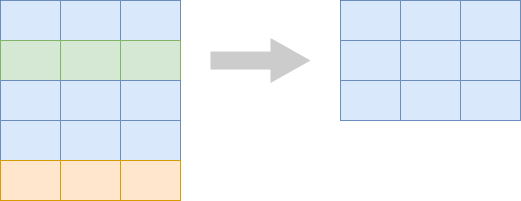
filter() picks rows
# A tibble: 69 × 6
pid time_point arm nugent_score crp_blood ph
<chr> <chr> <chr> <dbl> <dbl> <dbl>
1 pid_01 baseline placebo 8 0.44 5.7
2 pid_01 week_1 placebo 7 1.66 5.2
3 pid_01 week_7 placebo 7 1.44 5.4
4 pid_02 baseline placebo 7 1.55 5.2
5 pid_02 week_1 placebo 7 0.75 4.8
6 pid_02 week_7 placebo 4 1.17 4.2
7 pid_03 baseline placebo 6 1.78 4.8
8 pid_03 week_1 placebo 10 0.57 5.3
9 pid_03 week_7 placebo 7 1.79 5.2
10 pid_04 baseline placebo 5 1.76 4.8
# ℹ 59 more rowsSame kind of row (a participant-visit). Fewer of them.
filter() with logical operators
# A tibble: 39 × 6
pid time_point arm nugent_score crp_blood ph
<chr> <chr> <chr> <dbl> <dbl> <dbl>
1 pid_05 week_1 treatment 3 0.19 3.2
2 pid_05 week_7 treatment 2 0.45 3.5
3 pid_09 week_1 treatment 3 0.27 3.6
4 pid_10 week_1 treatment 0 0.01 3.5
5 pid_10 week_7 treatment 1 2.87 2.9
6 pid_11 week_1 treatment 1 0.1 3.3
7 pid_15 week_1 treatment 3 0.84 3.4
8 pid_15 week_7 treatment 3 0.68 3.5
9 pid_16 week_1 treatment 0 0.03 3.7
10 pid_16 week_7 treatment 2 0.5 3.2
# ℹ 29 more rows# A tibble: 23 × 6
pid time_point arm nugent_score crp_blood ph
<chr> <chr> <chr> <dbl> <dbl> <dbl>
1 pid_01 baseline placebo 8 0.44 5.7
2 pid_02 baseline placebo 7 1.55 5.2
3 pid_03 baseline placebo 6 1.78 4.8
4 pid_04 baseline placebo 5 1.76 4.8
5 pid_06 baseline placebo 10 4.03 5.3
6 pid_07 baseline placebo 7 0.1 5.2
7 pid_08 baseline placebo 9 3.18 5.4
8 pid_12 baseline placebo 8 2.42 5
9 pid_13 baseline placebo 8 2.69 5.1
10 pid_14 baseline placebo 7 0.34 5.3
# ℹ 13 more rowsAlso useful: &, |, %in%, is.na().
select() picks columns
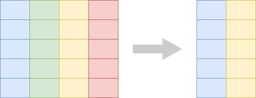
select() picks columns
# A tibble: 132 × 4
pid arm ph nugent_score
<chr> <chr> <dbl> <dbl>
1 pid_01 placebo 5.7 8
2 pid_01 placebo 5.2 7
3 pid_01 placebo 5.4 7
4 pid_02 placebo 5.2 7
5 pid_02 placebo 4.8 7
6 pid_02 placebo 4.2 4
7 pid_03 placebo 4.8 6
8 pid_03 placebo 5.3 10
9 pid_03 placebo 5.2 7
10 pid_04 placebo 4.8 5
# ℹ 122 more rowsSame rows, fewer columns. Use -column to drop a column. Use new = old to rename inside select().
mutate() adds derived columns
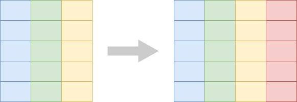
mutate() adds derived columns
# A tibble: 132 × 7
pid time_point arm nugent_score crp_blood ph crp_blood_ugul
<chr> <chr> <chr> <dbl> <dbl> <dbl> <dbl>
1 pid_01 baseline placebo 8 0.44 5.7 0.00044
2 pid_01 week_1 placebo 7 1.66 5.2 0.00166
3 pid_01 week_7 placebo 7 1.44 5.4 0.00144
4 pid_02 baseline placebo 7 1.55 5.2 0.00155
5 pid_02 week_1 placebo 7 0.75 4.8 0.00075
6 pid_02 week_7 placebo 4 1.17 4.2 0.00117
7 pid_03 baseline placebo 6 1.78 4.8 0.00178
8 pid_03 week_1 placebo 10 0.57 5.3 0.00057
9 pid_03 week_7 placebo 7 1.79 5.2 0.00179
10 pid_04 baseline placebo 5 1.76 4.8 0.00176
# ℹ 122 more rowsSame rows, one more column.
mutate() with if_else()
# A tibble: 6 × 4
pid time_point ph high_ph
<chr> <chr> <dbl> <chr>
1 pid_01 baseline 5.7 yes
2 pid_01 week_1 5.2 yes
3 pid_01 week_7 5.4 yes
4 pid_02 baseline 5.2 yes
5 pid_02 week_1 4.8 yes
6 pid_02 week_7 4.2 no if_else(condition, value_if_true, value_if_false). The new column has one value per row.
arrange() sorts rows
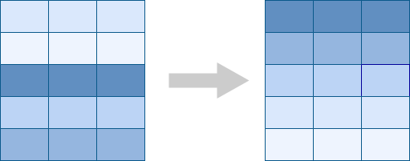
arrange() sorts rows
# A tibble: 132 × 6
pid time_point arm nugent_score crp_blood ph
<chr> <chr> <chr> <dbl> <dbl> <dbl>
1 pid_31 week_7 treatment 2 1.36 2.8
2 pid_10 week_7 treatment 1 2.87 2.9
3 pid_28 baseline treatment 3 0.67 2.9
4 pid_26 week_1 treatment 0 0.11 3
5 pid_23 week_7 placebo 3 3.67 3.1
6 pid_40 baseline treatment 3 1.48 3.1
7 pid_40 week_1 treatment 2 0.17 3.1
8 pid_05 week_1 treatment 3 0.19 3.2
9 pid_16 week_7 treatment 2 0.5 3.2
10 pid_37 week_7 treatment 2 0.7 3.2
# ℹ 122 more rows# A tibble: 132 × 6
pid time_point arm nugent_score crp_blood ph
<chr> <chr> <chr> <dbl> <dbl> <dbl>
1 pid_29 baseline placebo 7 2.39 5.8
2 pid_01 baseline placebo 8 0.44 5.7
3 pid_16 baseline treatment 6 1.91 5.7
4 pid_06 week_1 placebo 8 1.72 5.6
5 pid_26 baseline treatment 7 0.94 5.6
6 pid_13 week_1 placebo 7 2.57 5.5
7 pid_23 week_1 placebo 8 0.8 5.5
8 pid_27 baseline placebo 7 1.17 5.5
9 pid_01 week_7 placebo 7 1.44 5.4
10 pid_04 week_7 placebo 7 5.68 5.4
# ℹ 122 more rowsSame rows, reordered. The table’s meaning is unchanged.
A growing pipeline
# A tibble: 44 × 6
pid time_point arm nugent_score crp_blood ph
<chr> <chr> <chr> <dbl> <dbl> <dbl>
1 pid_01 baseline placebo 8 0.44 5.7
2 pid_02 baseline placebo 7 1.55 5.2
3 pid_03 baseline placebo 6 1.78 4.8
4 pid_04 baseline placebo 5 1.76 4.8
5 pid_05 baseline treatment 8 0.95 4.9
6 pid_06 baseline placebo 10 4.03 5.3
7 pid_07 baseline placebo 7 0.1 5.2
8 pid_08 baseline placebo 9 3.18 5.4
9 pid_09 baseline treatment 5 2.13 4.9
10 pid_10 baseline treatment 8 0.98 4.9
# ℹ 34 more rowsA growing pipeline
# A tibble: 44 × 5
pid arm ph nugent_score crp_blood
<chr> <chr> <dbl> <dbl> <dbl>
1 pid_01 placebo 5.7 8 0.44
2 pid_02 placebo 5.2 7 1.55
3 pid_03 placebo 4.8 6 1.78
4 pid_04 placebo 4.8 5 1.76
5 pid_05 treatment 4.9 8 0.95
6 pid_06 placebo 5.3 10 4.03
7 pid_07 placebo 5.2 7 0.1
8 pid_08 placebo 5.4 9 3.18
9 pid_09 treatment 4.9 5 2.13
10 pid_10 treatment 4.9 8 0.98
# ℹ 34 more rowsA growing pipeline
# A tibble: 44 × 6
pid arm ph nugent_score crp_blood high_ph
<chr> <chr> <dbl> <dbl> <dbl> <chr>
1 pid_01 placebo 5.7 8 0.44 yes
2 pid_02 placebo 5.2 7 1.55 yes
3 pid_03 placebo 4.8 6 1.78 yes
4 pid_04 placebo 4.8 5 1.76 yes
5 pid_05 treatment 4.9 8 0.95 yes
6 pid_06 placebo 5.3 10 4.03 yes
7 pid_07 placebo 5.2 7 0.1 yes
8 pid_08 placebo 5.4 9 3.18 yes
9 pid_09 treatment 4.9 5 2.13 yes
10 pid_10 treatment 4.9 8 0.98 yes
# ℹ 34 more rowsA growing pipeline
# A tibble: 44 × 6
pid arm ph nugent_score crp_blood high_ph
<chr> <chr> <dbl> <dbl> <dbl> <chr>
1 pid_29 placebo 5.8 7 2.39 yes
2 pid_01 placebo 5.7 8 0.44 yes
3 pid_16 treatment 5.7 6 1.91 yes
4 pid_26 treatment 5.6 7 0.94 yes
5 pid_27 placebo 5.5 7 1.17 yes
6 pid_08 placebo 5.4 9 3.18 yes
7 pid_23 placebo 5.4 8 0.99 yes
8 pid_34 placebo 5.4 8 3.16 yes
9 pid_06 placebo 5.3 10 4.03 yes
10 pid_14 placebo 5.3 7 0.34 yes
# ℹ 34 more rowscount() — the bridge to Module 4
table_01 has 44 rows, one per participant. count(smoker) returns 2 rows.
A row is no longer a participant. It is a smoker-category.
This is the first verb that changes what a row represents. Module 4 is mostly verbs like this.
count() on multiple columns
# A tibble: 4 × 3
arm smoker n
<chr> <chr> <int>
1 placebo non-smoker 12
2 placebo smoker 11
3 treatment non-smoker 15
4 treatment smoker 6Each row is one arm × smoker combination.
Let’s take a poll
Go to the event on wooclap

Keep the table in mind when you prompt
The AI writes better code when it knows the shape of your data: how many rows, and what one row stands for (a participant, a participant-visit, a smoker-category).
Not sure what a row means? Ask the AI what it thinks each row represents, then check that answer against the table.
Most requests come down to the verbs from this module:
- keep some rows (
filter) - compute a new column (
mutate) - count rows by group (
count) - pick and rename columns (
select,rename) - reorder rows (
arrange)
Exercise 1
Open notebooks/03-wrangling.qmd in your Codespace.
Back of the room — agentic. Work the exercise by chatting: ask for what you want and let the assistant write and run the code for you.
Front of the room — manual. Type the code yourself. Reach for the assistant only when you’re stuck.
“Chatting” means DMing the Workshop Assistant bot on Discord.
Visualization
From rows to marks
In the wrangling half, every row of the table meant something specific (a participant, a participant-visit).
In a plot, every row of the data becomes a mark — a point, a bar, a box.
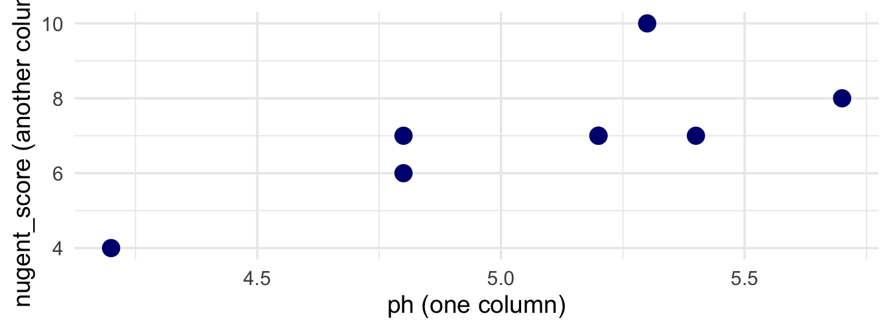
Each of the 8 points above came from 8 rows of table_02. The plotting half asks: what is each mark, and how is each mark connected to a row?
What plot answers your question?
- compare a number across groups → boxplot
- relate two numbers → scatter
- compare counts across categories → bar
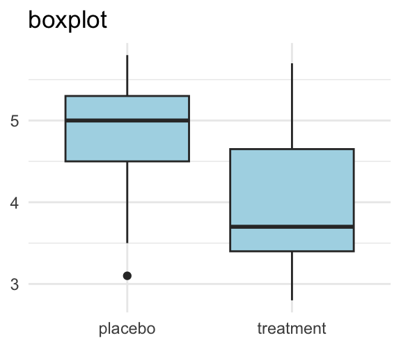
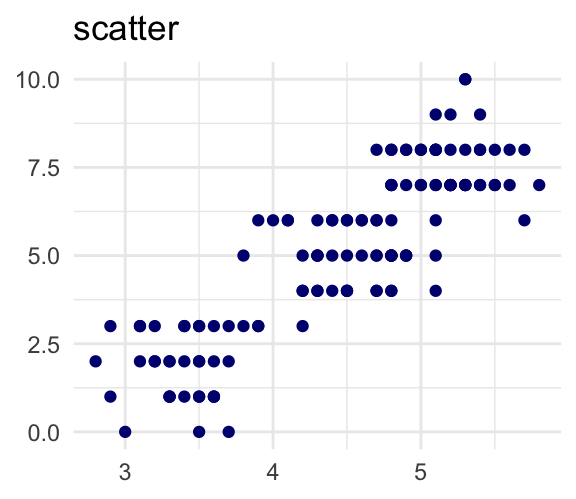
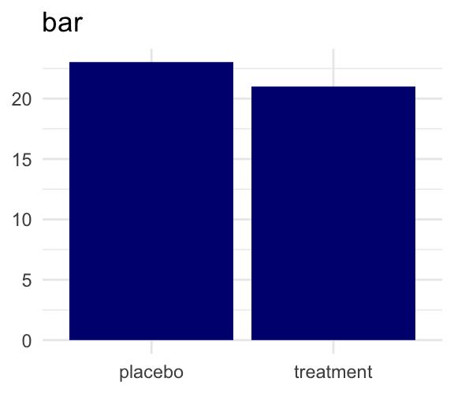
Pick the plot to fit the question.
Every plot has three pieces
- geom — the kind of mark and the rule for drawing it (
geom_pointdraws round dots;geom_boxplotdraws a five-number summary box) - mark — what you see on the plot. Marks are produced by the geom.
- mapping — the link from a data column to a property of the mark, written in
aes()
Every plot has three pieces
Marks: the coloured dots.
Mappings: ph → x, nugent_score → y, arm → color.
Geom: geom_jitter.
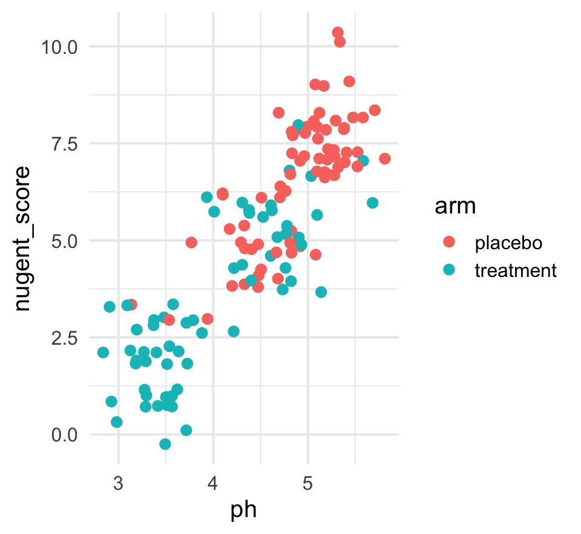
What “aesthetic” means in ggplot
In ggplot, an aesthetic is a visual property of a mark — x position, y position, color, fill, shape, size.
aes() is short for aesthetic mapping and connects a data column to one of these properties.
Aesthetic mappings with aes()
aes(x = ph, y = nugent_score) says: each mark’s x position comes from the row’s ph; its y position comes from the row’s nugent_score.
The same column can be shown on different aesthetics — aes(y = ph) or aes(color = ph).
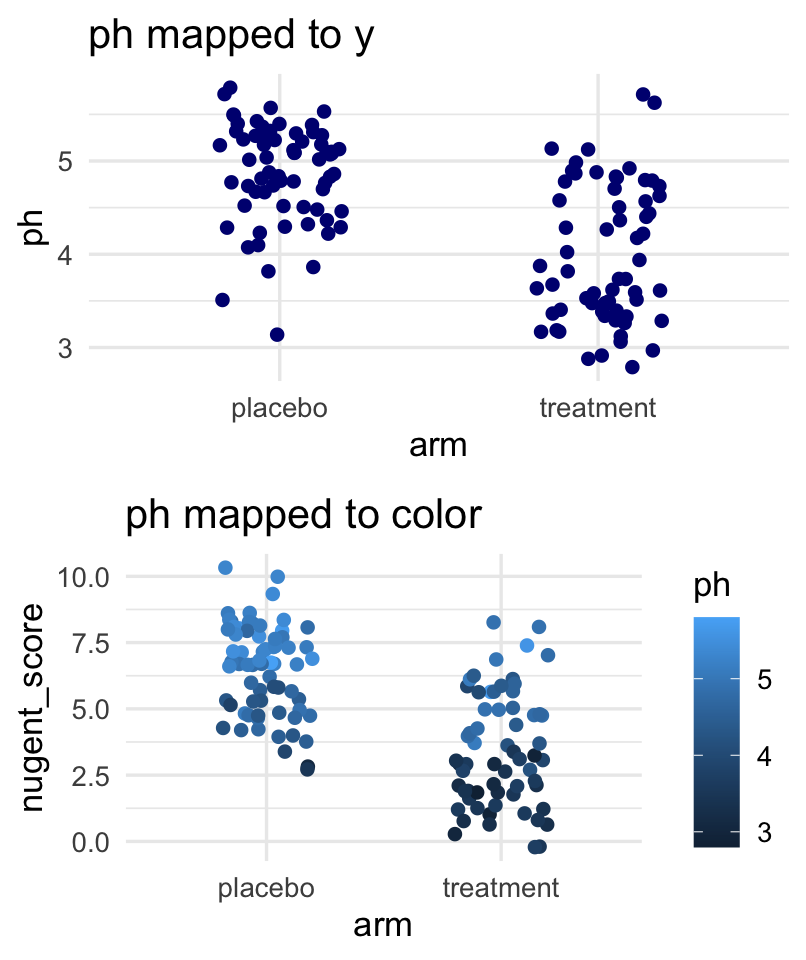
Variable type matches aesthetic
Continuous variables (ph, crp_blood) suit continuous aesthetics: y position, color gradient.
Categorical variables (arm, smoker) suit categorical aesthetics: grouping x, fill, shape.
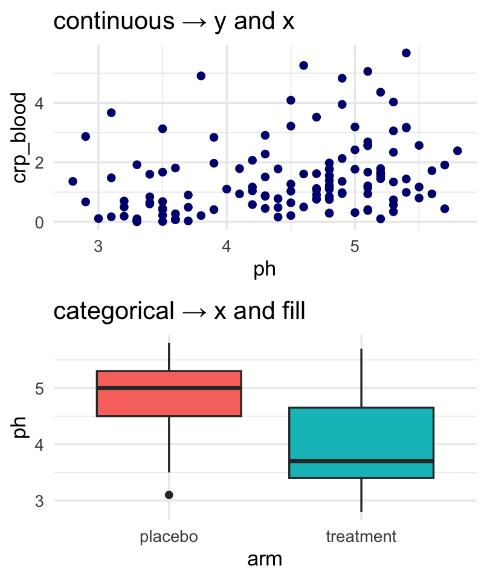
Common types of mappings
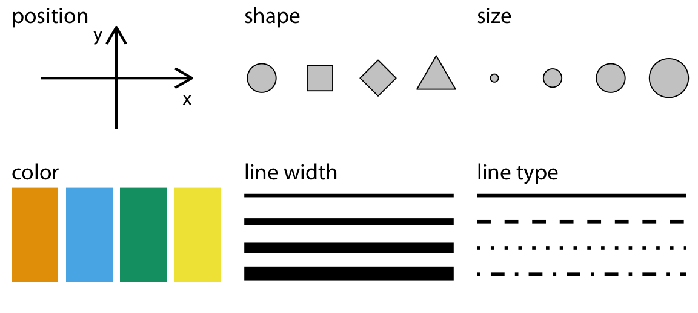
Figure from Claus O. Wilke, Fundamentals of Data Visualization (O’Reilly, 2019).
Each aesthetic is a channel you can map a column to: x position, y position, color, fill, shape, size. The next activity asks you to pick which channel fits which column.
Exploring data for patterns
In pairs or trios, open the data on the module page and sketch a visualization that reveals which TB strains are drug-resistant.
Sketch at excalidraw.com. Name your marks, your mappings, and your geom, then post the image and your answers to #module-3-sketches on Discord.
Your first ggplot
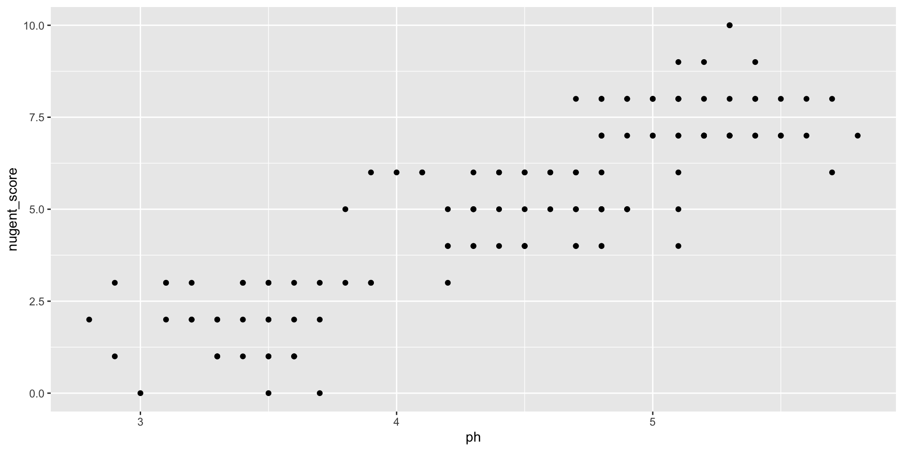
Each row of table_02 becomes one point.
Same mapping, swap geoms
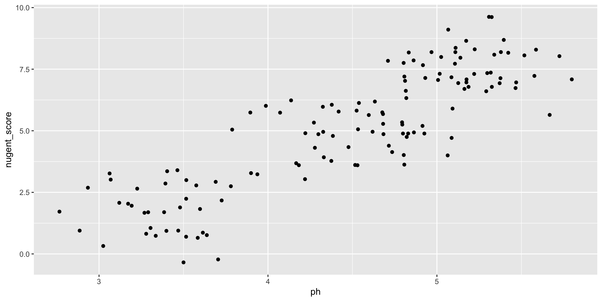
geom_jitter() adds a small random offset — useful for integer-valued nugent_score.
Same x, same y, different mark.
A third aesthetic via color
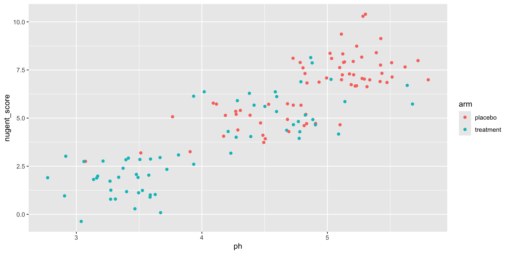
Each mark’s position comes from ph and nugent_score; its color comes from arm.
Different geoms answer different questions

Same data. Now x is categorical (arm).
The mark is a box that summarises many rows. The row-to-mark ratio is not 1:1 — this geom summarises.
color vs fill
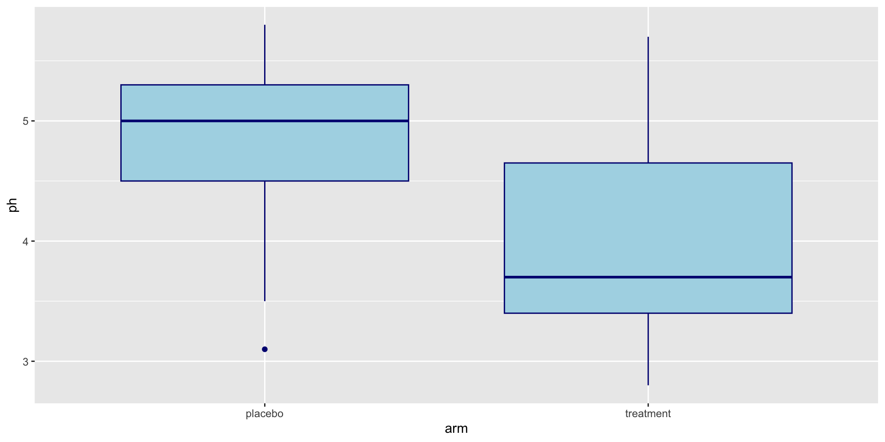
color is the outline. fill is the inside.
Mapping vs parameter
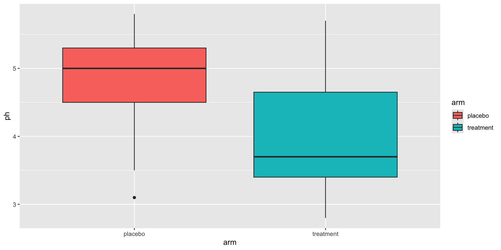
Inside aes() — the fill varies with the data.
Mapping vs parameter
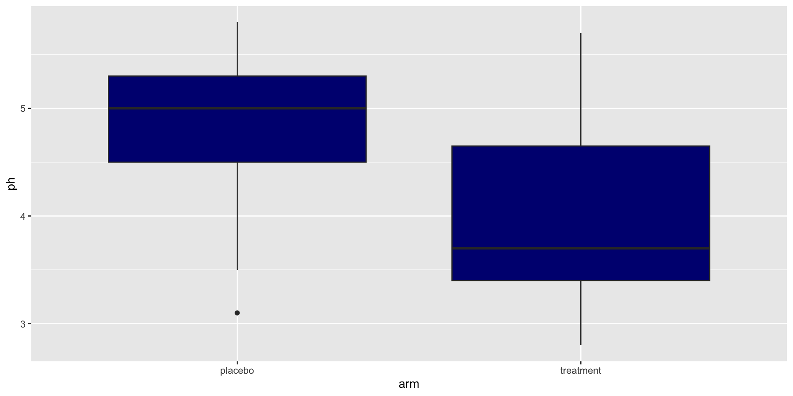
Outside aes() — the fill is one fixed value.
The single most common beginner mistake.
Bar plot from pre-counted data

count() returns one row per category. geom_col() draws one bar per row. The row-to-mark ratio is 1:1 again.
We use geom_col instead of geom_bar so the count → bar mapping is explicit.
Axis order is meaning
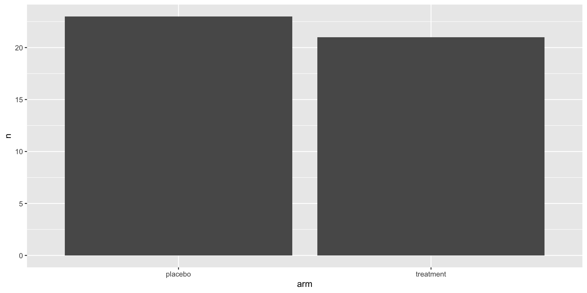
fct_relevel(column, "level1", "level2", ...) sets the order explicitly. Naming "placebo" puts it first; any unnamed level keeps its position after.
R defaults to alphabetical order, which is rarely what you want. Set the order to mean something — control first, baseline first, lowest dose first.
Labels
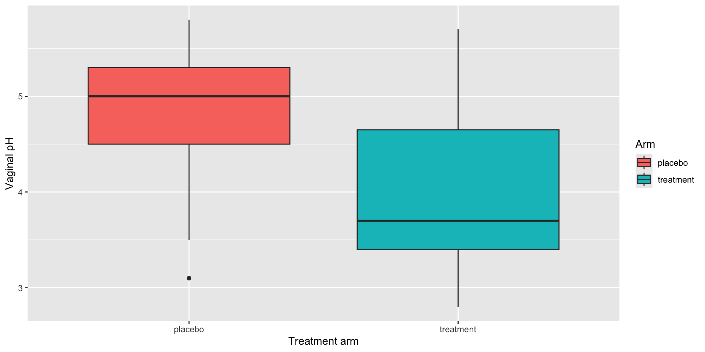
Every published plot needs them.
Facets
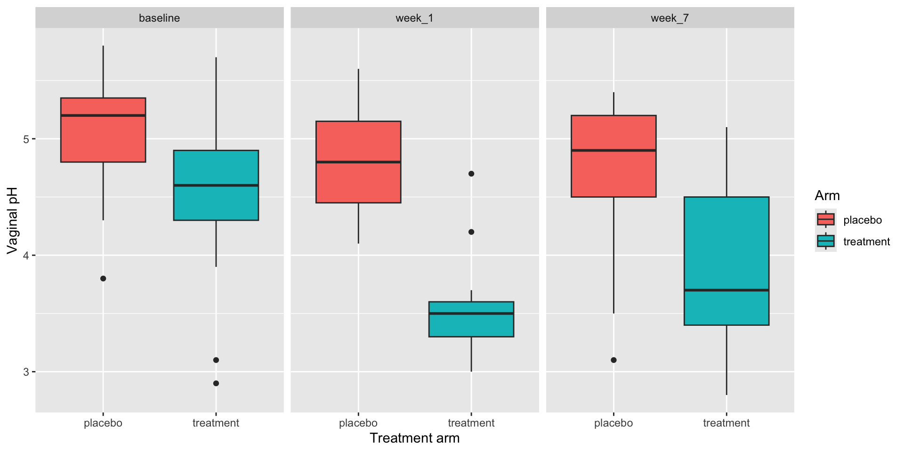
facet_wrap(~ column) splits the plot across panels.
Each row in the data still becomes one mark, placed in its time_point panel.
Let’s take another poll
Go to the event on wooclap
Exercise 2
Open notebooks/03-visualization.qmd in your Codespace.
The modes flip: the back of the room goes manual, the front goes agentic.